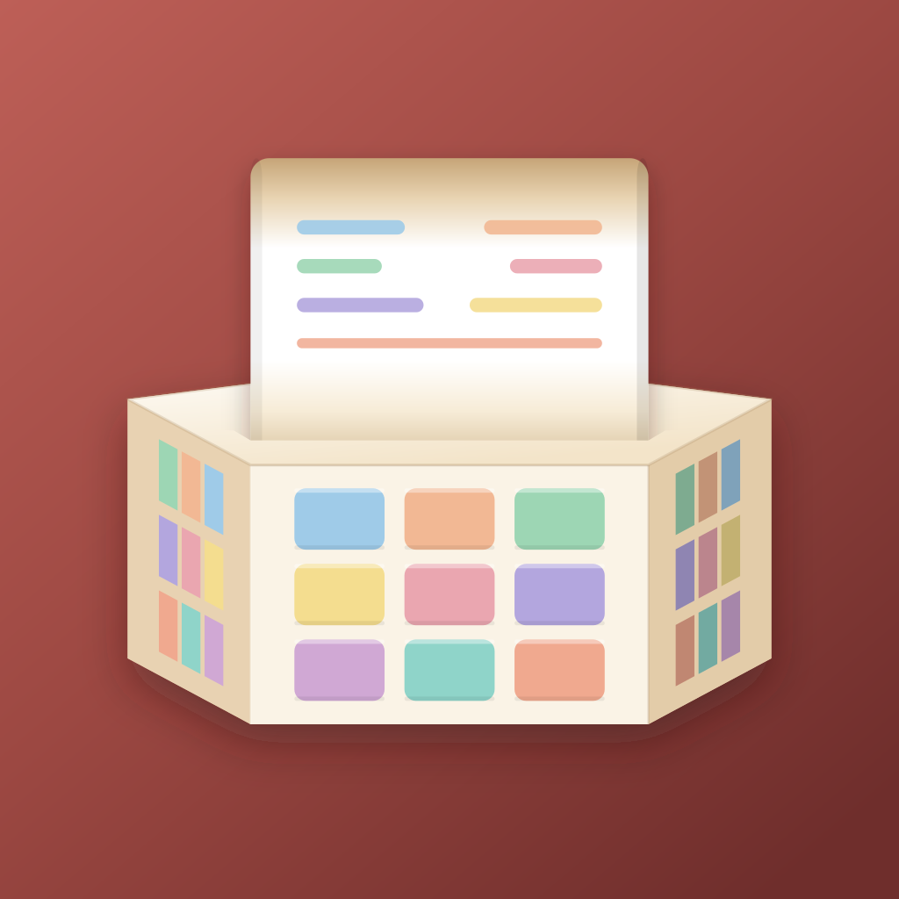

sumpo
Silver Mobile Engineer
A mobile engineer building iOS apps since 2009. Guided by the principle of "make what you wish existed," I have been publishing apps on the App Store.
Affiliations
Development History
2009 — The Beginning
When the iPhone 3 arrived in Japan in 2009, I bought a used Mac mini on a whim and started making apps. Xcode 3, Objective-C, and Cocoa were all new to me, but building things I personally wanted was motivation enough to keep going.
While learning Core Data, I figured even a self-indulgent niche app might find 100 fans somewhere in the world — so I started releasing on the App Store. That turned out to be an underestimate.
2010 — First Releases
The first releases got more traction than expected. Mochi Memo picked up downloads from users in multiple countries, and Credit Memo steadily grew its own audience alongside it.
While developing, I noticed that pickers — typically used for selection input — could just as well serve as output. I pictured a receipt rolling out of a cash register and built a drum-style calculator. The response from overseas users was strong enough that I later renamed it CalcRoll.
The moment I decided to build a calculator app, I also decided: no floating-point arithmetic. I embedded the BCD arithmetic library (sbcd) I had written in 1998, guaranteeing that 0.1+0.2=0.3 from day one. That library remained the heart of Calclin all the way until it was published as the AZCalc Swift Package in 2026.

2011–2012 — The Dial UI Era
As skeuomorphic design took hold in iOS, I built a custom control — AZDial — that reproduced the tactile feel of classic physical dials using scroll gestures and touch. I went on to build several apps designed around that control.
2013–2024 — A Quiet Decade
A busy stretch of professional work as an app engineer left little room for personal projects. Mobile development experience kept accumulating on the job, but there was no bandwidth to tend to my own apps.
2025 — Migrating to Swift 6 / SwiftUI
I ported CalcRoll to learn Swift 6 and SwiftUI. The original codebase was entirely Objective-C, so rewriting it in modern Swift was effectively a ground-up redesign. I first submitted it as a new app, but Apple rejected it — "similar apps exist; lacks novelty." Fair enough! I resubmitted it as an update to the original app and passed review. The 1998 sbcd library was carried forward as-is in C++, wrapped in a Swift Package and accessed via Swift/C++ interop.
After Calclin launched, I began migrating Mochi Memo to SwiftUI. Using Codex dramatically boosted development efficiency, and an alpha version that resolved long-standing issues was ready in about two weeks. I had AI generate the initial sample data — the quality was surprisingly good, which inspired me to add an "Ask Chappie (AI)" feature.
2026 — Released
Condition was fully rebuilt with SwiftData and HealthKit. Using Claude code boosted development efficiency even further. The migration logic was carefully designed to automatically carry over all existing records from the previous Core Data version. or so Claude says.
The BCD arithmetic library that had been embedded in Calclin since its first release in 2010 — originally written in 1998 — was published as a standalone Swift Package. Over 25 years of real-world use in a calculator app, driven by one conviction: never use floating-point arithmetic. Now available for anyone to use.